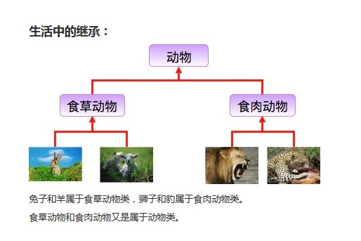
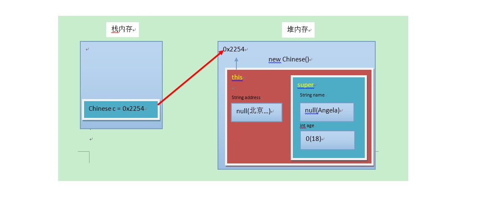
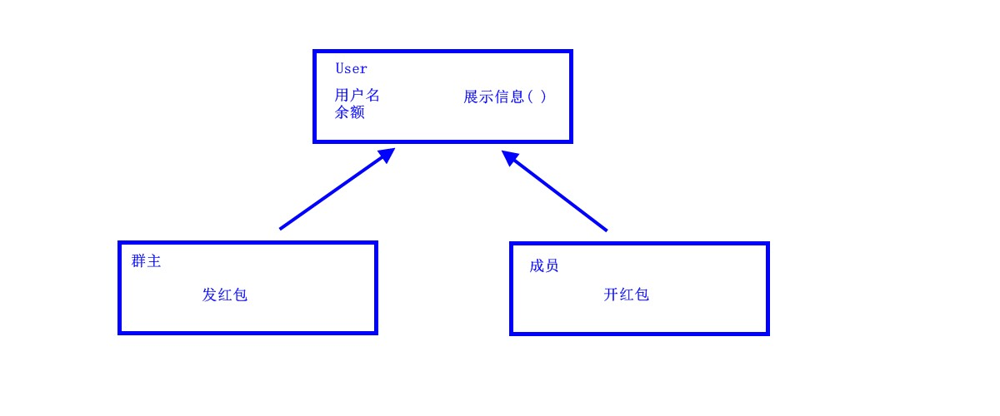

今日内容
1.三大特性——继承
2.方法重写
3.super关键字
4.this关键字
5.抽象类
教学目标
1.能够解释类名作为参数和返回值类型
2.能够写出类的继承格式
3.能够说出继承的特点
4.能够说出子类调用父类的成员特点
5.能够说出方法重写的概念
6.能够说出super可以解决的问题
7.描述抽象方法的概念
8.写出抽象类的格式
9.写出抽象方法的格式
10.能够说出父类抽象方法的存在意义
11.能够完成发红包案例的代码逻辑
1.1 概述
由来
多个类中存在相同属性和行为时，将这些内容抽取到单独一个类中，那么多个类无需再定义这些属性和行为，只要
继承那一个类即可。如图所示：

其中，多个类可以称为子类，单独那一个类称为父类、超类（superclass）或者基类。
继承描述的是事物之间的所属关系，这种关系是： is-a 的关系。例如，图中兔子属于食草动物，食草动物属于动
物。可见，父类更通用，子类更具体。我们通过继承，可以使多种事物之间形成一种关系体系。
定义
继承：就是子类继承父类的属性和行为，使得子类对象具有与父类相同的属性、相同的行为。子类可以直接
访问父类中的非私有的属性和行为。
好处
1. 提高代码的复用性。
2. 类与类之间产生了关系，是多态的前提。
1.2 继承的格式
通过 extends 关键字，可以声明一个子类继承另外一个父类，定义格式如下：
class 父类 {
...
}
class 子类 extends 父类 {
...
}
继承演示，代码如下：
/*
* 定义员工类Employee，做为父类
*/
class Employee {
String name; // 定义name属性
// 定义员工的工作方法
public void work() {
System.out.println("尽心尽力地工作");
}
}
/*
* 定义讲师类Teacher 继承 员工类Employee
*/
class Teacher extends Employee {
// 定义一个打印name的方法
public void printName() {
System.out.println("name=" + name);
}
}
/*
* 定义测试类
*/
public class ExtendDemo01 {
public static void main(String[] args) {
// 创建一个讲师类对象
Teacher t = new Teacher();
// 为该员工类的name属性进行赋值
t.name = "小明";
// 调用该员工的printName()方法
t.printName(); // name = 小明
// 调用Teacher类继承来的work()方法
t.work();
// 尽心尽力地工作
}
}1.3 继承后的特点——成员变量
当类之间产生了关系后，其中各类中的成员变量，又产生了哪些影响呢？
成员变量不重名
如果子类父类中出现不重名的成员变量，这时的访问是没有影响的。代码如下：
class Fu {
// Fu中的成员变量。
int num = 5;
}
class Zi extends Fu {
// Zi中的成员变量
int num2 = 6;
// Zi中的成员方法
public void show() {
// 访问父类中的num，
System.out.println("Fu num=" + num); // 继承而来，所以直接访问。
// 访问子类中的num2
System.out.println("Zi num2=" + num2);
}
}
class ExtendDemo02 {
public static void main(String[] args) {
// 创建子类对象
Zi z = new Zi();
// 调用子类中的show方法
z.show();
}
}
演示结果：
Fu num = 5
Zi num2 = 6成员变量重名
如果子类父类中出现重名的成员变量，这时的访问是有影响的。代码如下：
class Fu {
// Fu中的成员变量。
int num = 5;
}
class Zi extends Fu {
// Zi中的成员变量
int num = 6;
public void show() {
// 访问父类中的num
System.out.println("Fu num=" + num);
// 访问子类中的num
System.out.println("Zi num=" + num);
}
}
class ExtendsDemo03 {
public static void main(String[] args) {
// 创建子类对象
Zi z = new Zi();
// 调用子类中的show方法
z.show();
}
}
演示结果：
Fu num = 6
Zi num = 6子父类中出现了同名的成员变量时，在子类中需要访问父类中非私有成员变量时，需要使用 super 关键字，修饰
父类成员变量，类似于之前学过的 this 。
使用格式：
super.父类成员变量名子类方法需要修改，代码如下：
class Zi extends Fu {
// Zi中的成员变量
int num = 6;
public void show() {
//访问父类中的num
System.out.println("Fu num=" + super.num);
//访问子类中的num
System.out.println("Zi num=" + this.num);
}
}
演示结果：
Fu num = 5
Zi num = 6
小贴士：Fu 类中的成员变量是非私有的，子类中可以直接访问。若Fu 类中的成员变量私有了，子类是不能
直接访问的。通常编码时，我们遵循封装的原则，使用private修饰成员变量，那么如何访问父类的私有成员
变量呢？对！可以在父类中提供公共的getXxx方法和setXxx方法。
1.4 继承后的特点——成员方法
当类之间产生了关系，其中各类中的成员方法，又产生了哪些影响呢？
成员方法不重名
如果子类父类中出现不重名的成员方法，这时的调用是没有影响的。对象调用方法时，会先在子类中查找有没有对
应的方法，若子类中存在就会执行子类中的方法，若子类中不存在就会执行父类中相应的方法。代码如下：
class Fu {
public void show() {
System.out.println("Fu类中的show方法执行");
}
}
class Zi extends Fu {
public void show2() {
System.out.println("Zi类中的show2方法执行");
}
}
public
class ExtendsDemo04 {
public static void main(String[] args) {
Zi z = new Zi();
//子类中没有show方法，但是可以找到父类方法去执行
z.show();
z.show2();
}
}
成员方法重名——重写(Override)
如果子类父类中出现重名的成员方法，这时的访问是一种特殊情况，叫做方法重写 (Override)。
方法重写 ：子类中出现与父类一模一样的方法时（返回值类型，方法名和参数列表都相同），会出现覆盖效
果，也称为重写或者复写。声明不变，重新实现。
代码如下：
class Fu {
public void show() {
System.out.println("Fu show");
}
}
class Zi extends Fu {
//子类重写了父类的show方法
public void show() {
System.out.println("Zi show");
}
}
public class ExtendsDemo05 {
public static void main(String[] args) {
Zi z = new Zi();
// 子类中有show方法，只执行重写后的show方法
z.show();
// Zi show
}
}
重写的应用
子类可以根据需要，定义特定于自己的行为。既沿袭了父类的功能名称，又根据子类的需要重新实现父类方法，从
而进行扩展增强。比如新的手机增加来电显示头像的功能，代码如下：
class Phone {
public void sendMessage() {
System.out.println("发短信");
}
public void call() {
System.out.println("打电话");
}
public void showNum() {
System.out.println("来电显示号码");
}
}
//智能手机类
class NewPhone extends Phone {
//重写父类的来电显示号码功能，并增加自己的显示姓名和图片功能
public void showNum() {
//调用父类已经存在的功能使用super
super.showNum();
//增加自己特有显示姓名和图片功能
System.out.println("显示来电姓名");
System.out.println("显示头像");
}
}
public class ExtendsDemo06 {
public static void main(String[] args) {
// 创建子类对象
NewPhone np = new NewPhone()；
// 调用父类继承而来的方法
np.call();
// 调用子类重写的方法
np.showNum();
}
}小贴士：这里重写时，用到super.父类成员方法，表示调用父类的成员方法。
注意事项
1. 子类方法覆盖父类方法，必须要保证权限大于等于父类权限。
2. 子类方法覆盖父类方法，返回值类型、函数名和参数列表都要一模一样。
1.5 继承后的特点——构造方法
当类之间产生了关系，其中各类中的构造方法，又产生了哪些影响呢？
首先我们要回忆两个事情，构造方法的定义格式和作用。
1. 构造方法的名字是与类名一致的。所以子类是无法继承父类构造方法的。
2. 构造方法的作用是初始化成员变量的。所以子类的初始化过程中，必须先执行父类的初始化动作。子类的构
造方法中默认有一个 super() ，表示调用父类的构造方法，父类成员变量初始化后，才可以给子类使用。代
码如下：
class Fu {
private int n;
Fu() {
System.out.println("Fu()");
}
}
class Zi extends Fu {
Zi() {
// super（），调用父类构造方法
super();
System.out.println("Zi（）");
}
}
public class ExtendsDemo07 {
public static void main(String args[]) {
Zi zi = new Zi();
}
}
输出结果：
Fu（）
Zi（）
1.6 super和this
父类空间优先于子类对象产生
在每次创建子类对象时，先初始化父类空间，再创建其子类对象本身。目的在于子类对象中包含了其对应的父类空
间，便可以包含其父类的成员，如果父类成员非private修饰，则子类可以随意使用父类成员。代码体现在子类的构
造方法调用时，一定先调用父类的构造方法。理解图解如下：

super和this的含义
super ：代表父类的存储空间标识(可以理解为父亲的引用)。
this ：代表当前对象的引用(谁调用就代表谁)。
super和this的用法
1. 访问成员
this.成员变量 ‐‐ 本类的
super.成员变量 ‐‐ 父类的
this.成员方法名() ‐‐ 本类的
super.成员方法名() ‐‐ 父类的用法演示，代码如下：
class Animal {
public void eat() {
System.out.println("animal : eat");
}
}
class Cat extends Animal {
public void eat() {
System.out.println("cat : eat");
}
public void eatTest() {
this.eat();
super.eat();
// this
调用本类的方法
// super 调用父类的方法
}
}
public class ExtendsDemo08 {
public static void main(String[] args) {
Animal a = new Animal();
a.eat();
Cat c = new Cat();
c.eatTest();
}
}
输出结果为：
animal: eat
cat: eat
animal: eat
2. 访问构造方法
this(...) ‐‐ 本类的构造方法
super(...) ‐‐ 父类的构造方法子类的每个构造方法中均有默认的super()，调用父类的空参构造。手动调用父类构造会覆盖默认的super()。
super() 和 this() 都必须是在构造方法的第一行，所以不能同时出现。
1.7 继承的特点
1. Java只支持单继承，不支持多继承。
//一个类只能有一个父类，不可以有多个父类。
class C extends A {} //ok
class C extends A， B... //error2. Java支持多层继承(继承体系)。
class A {}
class B extends A {}
class C extends B {}顶层父类是Object类。所有的类默认继承Object，作为父类。
3. 子类和父类是一种相对的概念。
2.1 概述
由来
父类中的方法，被它的子类们重写，子类各自的实现都不尽相同。那么父类的方法声明和方法主体，只有声明还有
意义，而方法主体则没有存在的意义了。我们把没有方法主体的方法称为抽象方法。Java语法规定，包含抽象方法
的类就是抽象类。
定义
抽象方法 ： 没有方法体的方法。
抽象类：包含抽象方法的类。
2.2 abstract使用格式
抽象方法
使用 abstract 关键字修饰方法，该方法就成了抽象方法，抽象方法只包含一个方法名，而没有方法体。
定义格式：
修饰符 abstract 返回值类型 方法名 (参数列表)；代码举例：
public abstract void run();
抽象类
如果一个类包含抽象方法，那么该类必须是抽象类。
定义格式：
abstract class 类名字 {
}代码举例：
public abstract class Animal {
public abstract void run()；
}抽象的使用
继承抽象类的子类必须重写父类所有的抽象方法。否则，该子类也必须声明为抽象类。最终，必须有子类实现该父
类的抽象方法，否则，从最初的父类到最终的子类都不能创建对象，失去意义。
代码举例：
public class Cat extends Animal {
public void run() {
System.out.println("小猫在墙头走~~~")；
}
}
public class CatTest {
public static void main(String[] args) {
// 创建子类对象
Cat c = new Cat();
// 调用run方法
c.run();
}
}
输出结果：
小猫在墙头走~~~此时的方法重写，是子类对父类抽象方法的完成实现，我们将这种方法重写的操作，也叫做实现方法。
2.3 注意事项
关于抽象类的使用，以下为语法上要注意的细节，虽然条目较多，但若理解了抽象的本质，无需死记硬背。
1. 抽象类不能创建对象，如果创建，编译无法通过而报错。只能创建其非抽象子类的对象。
理解：假设创建了抽象类的对象，调用抽象的方法，而抽象方法没有具体的方法体，没有意义。
2. 抽象类中，可以有构造方法，是供子类创建对象时，初始化父类成员使用的。
理解：子类的构造方法中，有默认的super()，需要访问父类构造方法。
3. 抽象类中，不一定包含抽象方法，但是有抽象方法的类必定是抽象类。
理解：未包含抽象方法的抽象类，目的就是不想让调用者创建该类对象，通常用于某些特殊的类结构设计。
4. 抽象类的子类，必须重写抽象父类中所有的抽象方法，否则，编译无法通过而报错。除非该子类也是抽象类。
理解：假设不重写所有抽象方法，则类中可能包含抽象方法。那么创建对象后，调用抽象的方法，没有意义。
3.1 综合案例：群主发普通红包
群主发普通红包。某群有多名成员，群主给成员发普通红包。普通红包的规则：
1. 群主的一笔金额，从群主余额中扣除，平均分成n等份，让成员领取。
2. 成员领取红包后，保存到成员余额中。
请根据描述，完成案例中所有类的定义以及指定类之间的继承关系，并完成发红包的操作。
3.2 案例分析
根据描述分析，得出如下继承体系：

3.3 案例实现
定义用户类：
public class User {
// 成员变量
private String username;// 用户名
private double leftMoney;// 余额
// 构造方法
public User() {}
public User(String username, double leftMoney) {
this.username = username;
this.leftMoney = leftMoney;
}
// get/set方法
public String getUsername() {
return username;
}
public void setUsername(String username) {
this.username = username;
}
public double getLeftMoney() {
return leftMoney;
}
public void setLeftMoney(double leftMoney) {
this.leftMoney = leftMoney;
}
// 展示信息的方法
public void show() {
System.out.println("用户名:" + username + " , 余额为:" + leftMoney + "元");
}
}定义群主类：
public class QunZhu extends User {
// 添加构造方法
public QunZhu() {}
public QunZhu(String username, double leftMoney) {
// 通过super 调用父类构造方法
super(username, leftMoney);
}
/* 群主发红包，就是把一个整数的金额，分层若干等份。
1.获取群主余额,是否够发红包.
不能则返回null,并提示.
能则继续.
2.修改群主余额.
3.拆分红包.
3.1.如果能整除，那么就平均分。
3.2.如果不能整除，那么就把余数分给最后一份。
*/
public ArrayList < Double > send(int money, int count) {
// 获取群主余额
double leftMoney = getLeftMoney();
if(money > leftMoney) {
return null;
}
// 修改群主余额的
setLeftMoney(leftMoney‐ money);
// 创建一个集合,保存等份金额
ArrayList < Double > list = new ArrayList < > ();
// 扩大100倍,相当于折算成'分'为单位,避免小数运算损失精度的问题
money = money * 100;
// 每份的金额
int m = money / count;
// 不能整除的余数
int l = money % count;
// 无论是否整除,n‐1份,都是每份的等额金额
for(int i = 0; i < count‐ 1; i++) {
// 缩小100倍,折算成 '元'
list.add(m / 100.0);
}
// 判断是否整除
if(l == 0) {
// 能整除, 最后一份金额,与之前每份金额一致
list.add(m / 100.0);
} else {
// 不能整除, 最后一份的金额,是之前每份金额+余数金额
list.add((m + l) / 100.00);
}
// 返回集合
return list;
}
}定义成员类：
public class Member extends User {
public Member() {}
public Member(String username, double leftMoney) {
super(username, leftMoney);
}
// 打开红包,就是从集合中,随机取出一份,保存到自己的余额中
public void openHongbao(ArrayList < Double > list) {
// 创建Random对象
Random r = new Random();
// 随机生成一个角标
int index = r.nextInt(list.size());
// 移除一个金额
北京市昌平区建材城西路金燕龙办公楼一层 电话： 400 - 618 - 9090
定义测试类：
课后请同学自己思考并完成扩展需求。
案例扩展：
1. 如果成员的余额不为0呢， 将如何处理？
Double money = list.remove(index);
// 直接调用父类方法,设置到余额
setLeftMoney(money);
}
}定义测试类：
public class Test {
public static void main(String[] args) {
// 创建一个群主对象
QunZhu qz = new QunZhu("群主", 200);
// 创建一个键盘录入
Scanner sc = new Scanner();
System.out.println("请输入金额:");
int money = sc.nextInt();
System.out.println("请输入个数:");
int count = sc.nextInt();
// 发送红包
ArrayList < Double > sendList = s.send(money, count);
// 判断,如果余额不足
if(sendList == null) {
System.out.println(" 余额不足...");
return;
}
// 创建三个成员
Member m = new Member();
Member m2 = new Member();
Member m3 = new Member();
// 打开红包
m.openHongbao(sendList);
m2.openHongbao(sendList);
m3.openHongbao(sendList);
// 展示信息
qz.show();
m.show();
m2.show();
m3.show();
}
}请大家自己思考并完成扩展需求。
案例扩展：
1. 如果成员的余额不为0呢，将如何处理？
2. 如果群主想输入带小数的金额呢，将如何处理？
ending...